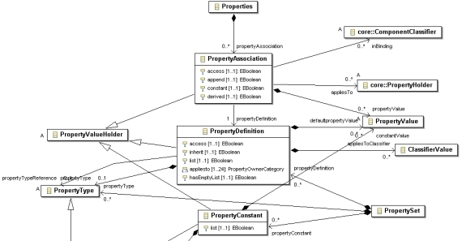
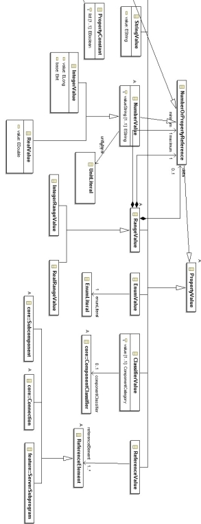
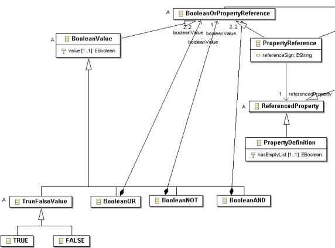

Previous
Next
Previous
Next 
| 5.3 AADL Properties in the Meta Model |
Package edu.cmu.sei.aadl.model.properties
contains the meta model classes related to
properties. Figure 23 shows the class PropertyHolder which is the super class for all model
classes representing AADL elements that can be associated with property values. This class
contains a single attribute properties that refers to the property associations declared
in that
element (see Figure 24). This class also contains the methods for looking up and setting
property values. These methods are described in Section 5.7 Advanced Property
Associations.

Figure 23: The PropertyHolder
class and its descendents.

Figure 24: Classes PropertyDeclaration
and PropertyAssociation.

Figure 25: Classes for representing
non-Boolean property values.

Figure 26: Classes for representing
Boolean property values. Also shown is the PropertyReference class.
A
property declaration is represented by the PropertyDefinition class, shown in Figure 24.
When writing a plug-in, you generally do not have to directly manipulate the attributes of
PropertyDefinitions; rather you simply need to obtain the PropertyDefinition object for
the
property whose values you are interested in looking up. Methods for retrieving specific
PropertyDefinition objects are described below.
Also
shown in Figure 24 is the PropertyAssociation class which models the assignment of a
particular value to a particular property for a particular component. You should never have to
directly manipulate PropertyAssociation objects when writing a plug-in. The property value
lookup methods, described in Section 5.8.4 Getting Property Values, interpret these objects,
and the property value setting methods, described in Section 5.8.5 Modifying Property
Associations, change their values or create new instances as necessary.
AADL
property expressions are represented using PropertyValue objects. In most cases, a
PropertyValue object will not point to an elaborate structure; see Figure 25. AADL,
however, does allow Boolean arithmetic, and BooleanValue object can be part of a tree
describing a Boolean predicate; see Figure 26. AADL also allows a property value to be a
reference to the value of another property or to a property constant, which adds some
complexity to the model: consider the BooleanOrPropertyReference,
NumberOrPropertyReference, PropertyReference, and ReferencedProperty classes. If
you are only interested in retrieving property values, you can avoid the complexity of property
expressions because the property lookup process also takes care of evaluating property
references and Boolean expressions. When creating new property associations via the
property setting methods, however, you must provide new PropertyValue objects to be
attached to the meta model. A tree containing BooleanValue or PropertyReference
objects
could be created for this purpose. It is the responsibility of the creator of these objects to
make sure that they result in legal AADL property expressions.
In
general, when retrieving property values in a plug-in you know which property you are
interested in, and therefore, the PropertyType of the property, and the specific subclass of
PropertyValue that its values will be.
| 5.3.1 Properties and the Instance Model |
A PropertyAssociation
is considered to be a contained property association if it has a non-
empty appliesTo attribute. OSATE’s property-related methods ignore such
PropertyAssociation objects when invoked on components making up the declarative model
because they declare information relevant to the instance model only. These property
associations are interpreted when a system instance is instantiated into an instance model.
During this process, the contents of the appliesTo attribute are used to identify the particular
InstanceObject that represents the instance component to which the property association
applies. A new PropertyAssociation object is then attached to that object’s properties
attribute describing the property association.
The derived attribute of PropertyAssociation is only meaningful when the
PropertyAssociation is part of an instance model. It indicates that the property association
is
derived from a property association in the declarative model. These property associations are
redundant, because they duplicate associations that the property lookup algorithm would find
by deferring to the declarative model (see Section 5.2.5 Property Lookup). But by
being
made explicit in the instance model they short-circuit the lookup process and remove the need
for examining the declarative model. This is useful because OSATE does not load a model
until it is actually used, and thus by copying all the property associations into the instance model
we can in many cases prevent the declarative model from being loaded during an analysis of the
instance model. By default, the system instantiation process used by OSATE caches
the
values of all properties explicitly used in the declarative model.
There
are two special cases in the instance model representation relating to properties:
- When representing reference values in the instance model, the class edu.cmu.sei.aadl.model.instance.InstanceReferenceValue is used instead of its more generic super class ReferenceValue. This is because in declarative models only a component path that represents a notional component instance can be provided, but in an instance model, a reference to the actual component instance can be provided. Specifically, the InstanceReferenceValue has an attribute referencedInstanceObject that points to an InstanceObject instance.
The property lookup process takes care of translating ReferenceValues into InstanceReferenceValues as needed. When writing an analysis, this distinction must be kept in mind depending on whether the analysis operates over a declarative or instance model.
- The in modes attribute of PropertyAssociations in an instance model refers to SystemOperationMode objects instead of Mode objects. These objects are described in more detail in the section on system operation modes. Again, the property lookup and model instantiation processes takes care of making this translation, but this distinction is reflected in what kind of objects are expected when looking up or setting modal properties values; see Sections 5.8.4 Getting Property Values and 5.8.5 Modifying Property Associations.